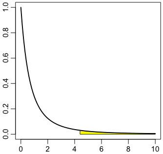

分散分析
一元配置分散分析
右の図は，3グループ（2点，3点，2点）に分かれた7点のデータ $x = (1,3,5,8,5,4,2)$ を示したものです。Rの書き方では
x = c(1,3,5,8,5,4,2) # データ
g = factor(c(1,1,2,2,2,3,3)) # グループの分かれ方
ということになります。図の横棒は各グループの平均（それぞれ 2，6，3）です。
この図はRで次のようにして描きました：
plot(1:7, x, pch=16, xlab="", ylab="", axes=FALSE)
text((1:7)+0.2, x, x)
lines(c(1,2), c(2,2))
lines(c(3,5), c(6,6))
lines(c(6,7), c(3,3))
元のデータ $x$ は7個の値から成りますので，自由度が7個です（$x$ has seven degrees of freedom）。
各値をグループの平均で置き換えたものは，自由度が3個です：
y = ave(x, g)y[1] 2 2 6 6 6 3 3
この ave() はとても便利です。もうちょっと一般的な aggregate()
という関数もあります。
aggregate(x, by=list(g), FUN=mean)Group.1 x1 1 22 2 63 3 3
単に x を g で分類するなら table(x, g) でできます。
全部の値を全体の平均4で置き換えたものは，自由度が1個です：
z = ave(x)z[1] 4 4 4 4 4 4 4
$y$ から $z$ を引いたもの
y - z[1] -2 -2 2 2 2 -1 -1
は，自由度 $3 - 1 = 2$ です。異なった値が3個なので自由度3のように見えますが，全部の合計が 0 に固定されていますので，自由度が一つ少ないのです。この2乗和（平方和）は 22 です：
sum((y - z)^2)[1] 22
この値は，グループ内での変動を消してグループ間の変動だけにしたものの2乗和ですので，群間平方和（級間平方和）sum of squares between groups の意で $SS_\text{between}$ と書くことにします。
$x$ が標準正規分布なら，この2乗和の分布は自由度 2 のカイ2乗分布です。
同様に，$x$ から $y$ を引いたもの
x - y[1] -1 1 -1 2 -1 1 -1
は，自由度 $7 - 3 = 4$ です。7個の値がありますが，最初の2個の和は 0，次の3個の和も 0，最後の2個の和も 0 という3個の条件があるので，自由度が3個減っています。この2乗和は 10 です：
sum((x - y)^2)[1] 10
この値は，さきほどとは逆に，グループ内での変動だけを取り出したものの2乗和ですので，群内平方和（級内平方和）sum of squares within groups の意で $SS_\text{within}$ と書くことにします。
$x$ が標準正規分布なら，この2乗和の分布は自由度 4 のカイ2乗分布です。
ベクトル $x - y$ と $y - z$ は直交します（なぜならば $y - z$ の同じ値の成分が続くグループ内で $x - y$ の成分の和は0だから，内積をとると0になります）ので，それらの2乗和の和は $x - z$ の2乗和になります：
sum((x - z)^2)[1] 32
これを $SS_\text{total}$ と書くことにします。つまり，
\[ SS_\text{total} = SS_\text{within} + SS_\text{between} \]ということになります。ここで，比
(sum((y-z)^2) / 2) / (sum((x-y)^2) / 4)[1] 4.4
を考えます。分子 (sum((y-z)^2) / 2)
は $SS_\text{between}$ をその自由度2で割ったもので，分母 (sum((x-y)^2) / 4)
は $SS_\text{within}$ をその自由度4で割ったものです。ここでもし $x$ の分布が正規分布なら，この比の分布は自由度 (2,4) の $F$ 分布です（下の「復習」参照）。したがって，
1 - pf(4.4, 2, 4)[1] 0.09765625
で上側確率が出ます。つまり，比
(sum((y-z)^2) / 2) / (sum((x-y)^2) / 4)
が 4.4 以上になる確率は約10%です。グループ内の変動に比べて，グループ間の変動がこれ以上に大きくなる確率は10%ほどあり，5%水準では有意といえません。
右の図はRで次のようにして描きました：
# par(mgp=c(1.8,0.6,0))
plot(NULL, xlim=c(0,10), ylim=c(0,1), xlab="", ylab="")
s = seq(4.4, 10, 0.1)
polygon(c(s,10,4.4), c(df(s,2,4),0,0), col="yellow")
curve(df(x,2,4), lwd=2, add=T)
1 - pf(4.4, 2, 4) は pf(1/4.4, 4, 2) と同じことです。
以上のことをもっと簡単に行うのが，線形モデルをあてはめる関数 lm()
と，あてはめたモデルの分散分析を行う関数 anova() です。
anova(lm(x ~ g))
結果は伝統的な分散分析表です：
Analysis of Variance Table
Response: x
Df Sum Sq Mean Sq F value Pr(>F)
g 2 22.0 11.0 4.4 0.09766 .
Residuals 4 10.0 2.5
---
Signif. codes: 0 ‘***’ 0.001 ‘**’ 0.01 ‘*’ 0.05 ‘.’ 0.1 ‘ ’ 1
同じ表は summary(aov(x ~ g))
でも出力できます。
Df が自由度（degrees of freedom），Sum Sq
が2乗和（平方和，sum of squares），Mean Sq
が2乗和を自由度で割ったもの（平均平方，mean squares），F value
が $F$ の値，Pr(>F)
がこの $F$ 値以上（$\geq$）の $F$ 値が出る確率（$p$ 値）です。その右側のピリオドは，下に凡例が出ていますが，$0.05 < p \leq 0.1$ であることを表します。
もっと簡潔な出力が次のコマンドで得られます：
oneway.test(x ~ g, var.equal=TRUE)
この var.equal=TRUE は分散が等しいことを仮定するという意味です。実は
oneway.test() のデフォルトは，t検定
のときのWelchの方法と同じ方法で，等分散を仮定しないで分散分析をします：
oneway.test(x ~ g)One-way analysis of means (not assuming equal variances)data: x and gF = 3.3913, num df = 2.0, denom df = 2.4, p-value = 0.1998
なお，2群の比較の場合，分散分析と $t$ 検定は同じことです。
並べ替え検定による方法
以上は正規分布を仮定した伝統的な分散分析です。正規分布を仮定せずに，$x$
のすべての (2,3,2) 分割について，上の
sum((y-z)^2)
に相当するもの（グループ間の変動の2乗和）が実際の値以上になる確率を求めてみましょう（このプログラムはもっと単純にできるかもしれません）：
x = c(1,3,5,8,5,4,2) # データ
g = factor(c(1,1,2,2,2,3,3)) # グループの分かれ方
ssq0 = sum((ave(x,g) - ave(x))^2) # 群間2乗和
c1 = combn(7, 3)
c2 = combn(4, 2)
n1 = ncol(c1)
n2 = ncol(c2)
ssq = numeric(0)
for (i in 1:n1) {
a = c1[,i]
g[a] = 1
b = setdiff(1:7, a)
for (j in 1:n2) {
g[b[c2[,j]]] = 2
g[b[-c2[,j]]] = 3
ssq = append(ssq, sum((ave(x,g)-ave(x))^2))
}
}
mean(ssq >= ssq0)
結果は 0.06666667 で，正規分布を仮定した値 0.09766 より若干小さくなりました。
復習
標準正規分布の確率変数 $X_1$, $X_2$, ..., $X_n$ が与えられたとき，その2乗和 $\chi^2_n = X_1^2 + X_2^2 + \cdots + X_n^2$ の分布を，自由度 $n$ のカイ2乗分布（$\chi^2$ 分布）といいます。
自由度 $m$ のカイ2乗分布の確率変数 $\chi^2_m$ をその自由度 $m$ で割ったものと，それと独立な自由度 $n$ のカイ2乗分布の確率変数 $\chi^2_n$ をその自由度 $n$ で割ったものの比
\[ F = \frac{\chi^2_m / m}{\chi^2_n / n} \]の分布を，自由度 $(m, n)$ の $F$ 分布といいます。
おまけ：Kruskal-Wallis 検定
上の oneway.test(x ~ g) に相当するノンパラメトリックな（分布を仮定しない）検定です：
kruskal.test(x ~ g)Kruskal-Wallis rank sum testdata: x by gKruskal-Wallis chi-squared = 4.8, df = 2, p-value = 0.09072